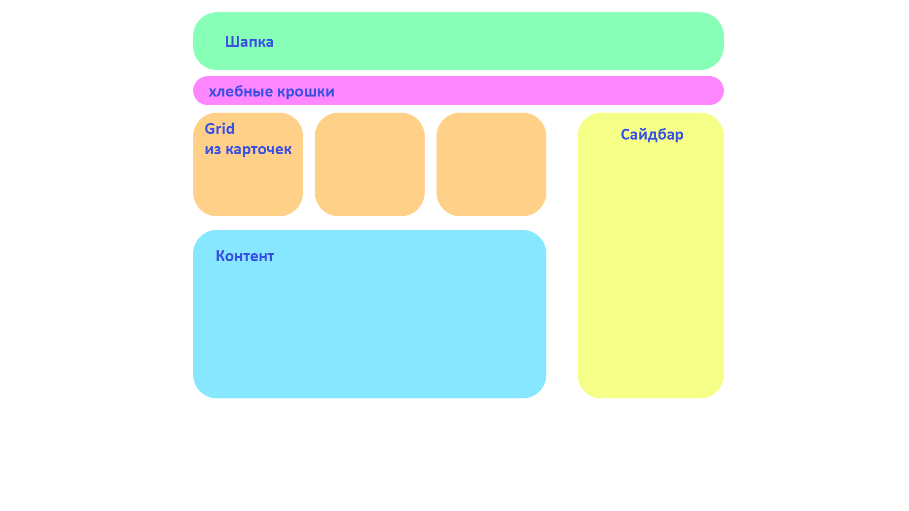

Дается макет и 15 минут. Необходимо, за отведенное время сверстать страницу по схематичному макету.
По-возможности, добавить детали (заголовки, ссылки, на что фантазии хватит)
Ожидается применение разных практик к верстке (grid, flex), соблюдение приблезительных пропорций.
Пример макета:
